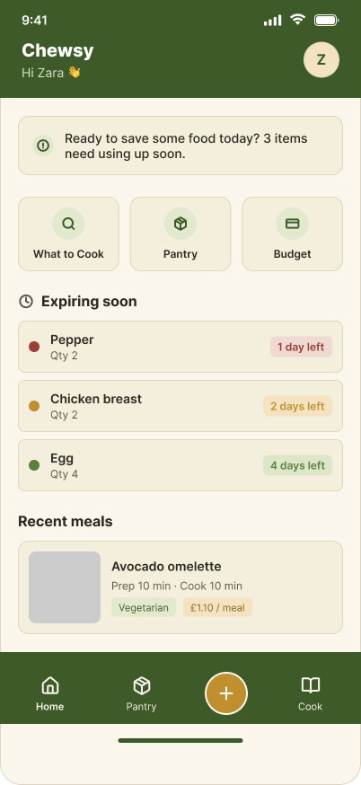
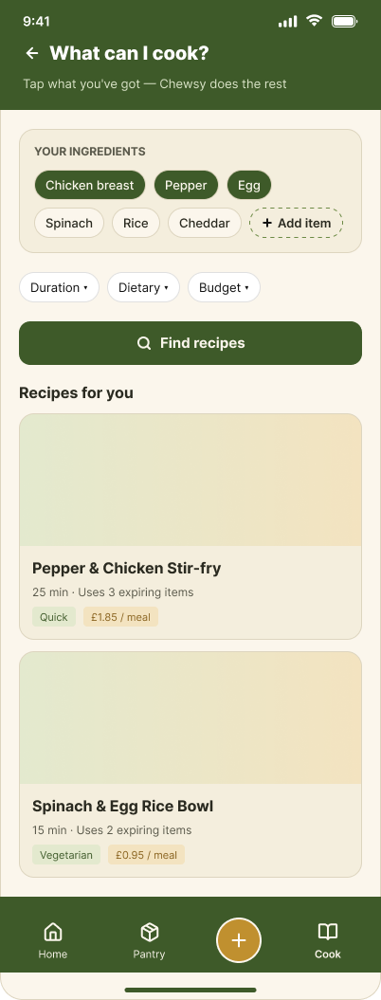
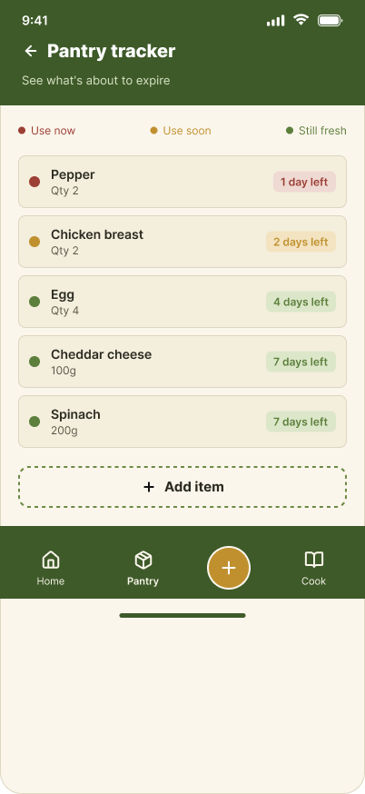
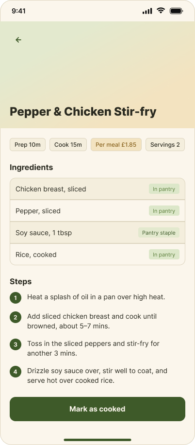

A smart meal planner that starts from what's already in your fridge, not a shopping list — built around a real, well-researched problem rather than a nice-to-have feature.
UK households produce roughly 9.5 million tonnes of food waste a year, and about half of that is still edible. Students are a big part of this — unpredictable schedules, limited cooking confidence, and poor visibility into what's already in the fridge all combine to make waste the default outcome.
Secondary research (Food Standards Agency, Zero Waste Scotland) put real numbers behind it: around two-thirds of students reported food in their fridge past its use-by date, and the average student loses roughly £273 a year to avoidable waste.
Existing apps like Mealime and Tasty solve a different problem — they assume you're shopping for a recipe, not cooking from what you've already got. Neither tracks expiry dates or budgets for students specifically. That gap became Chewsy's reason to exist.
I built a persona from patterns across the research and early empathy mapping, to keep decisions anchored to a real kind of user rather than an abstract "student."
Zara, 20 — second-year student in shared accommodation with limited kitchen space. Juggling coursework, a part-time job, and a full social life. Grocery shops are quick and unplanned. Goals: stop throwing money away on unused food, spend less mental energy figuring out what to cook. Frustration, in her own words: "I have lots of ingredients but I'm not sure what to make with them."
Home, ingredient input, pantry tracker, and recipe detail — the core flow, taken to full visual design.




The interface is built around a fridge-as-inventory mental model — the pantry tracker mirrors how students already think about their fridge, rather than introducing an unfamiliar system.
I ran short usability sessions with current students on the core "What can I cook?" flow and the pantry tracker, focused on whether the ingredient-selection interaction was obvious without explanation and whether the expiry colour-coding was understood without the legend.
The CS + UX combination is the throughline here — this is one of the few case studies in this portfolio where the plan is to eventually build the ingredient-to-recipe flow as working code, not just a polished prototype.